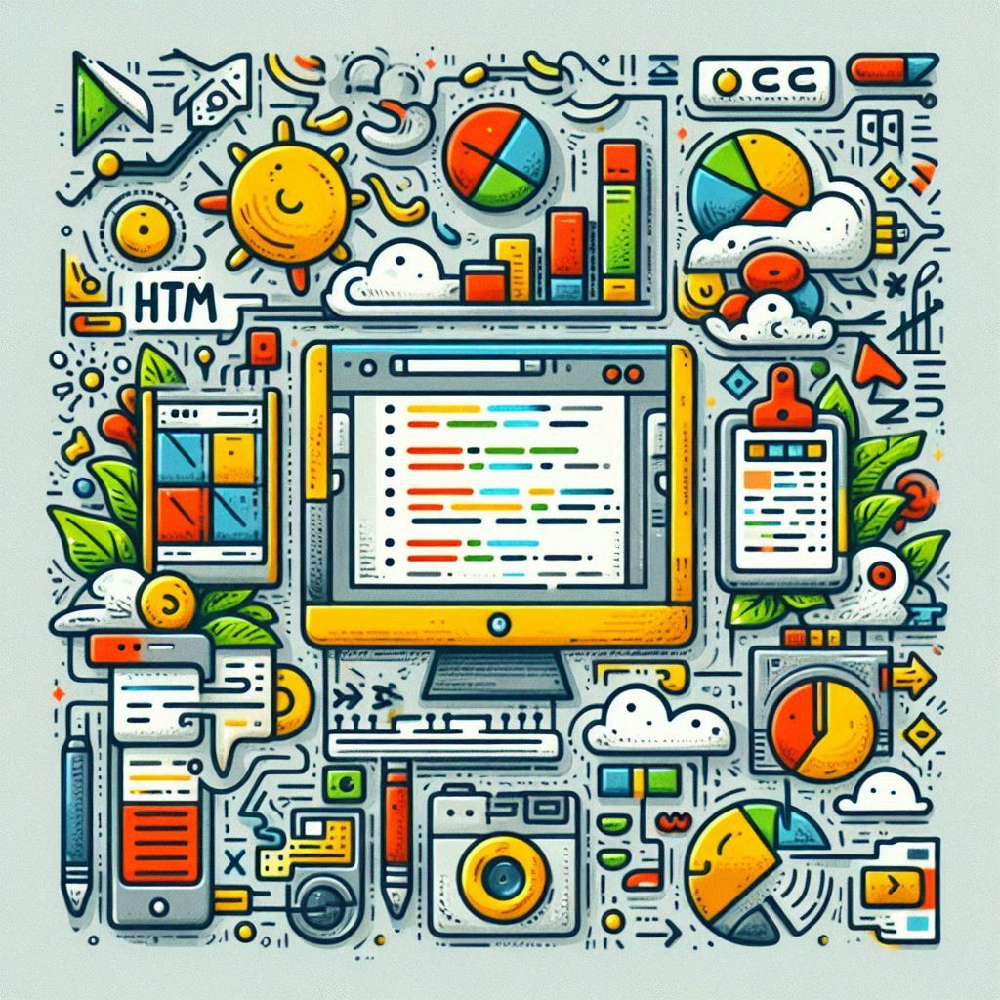
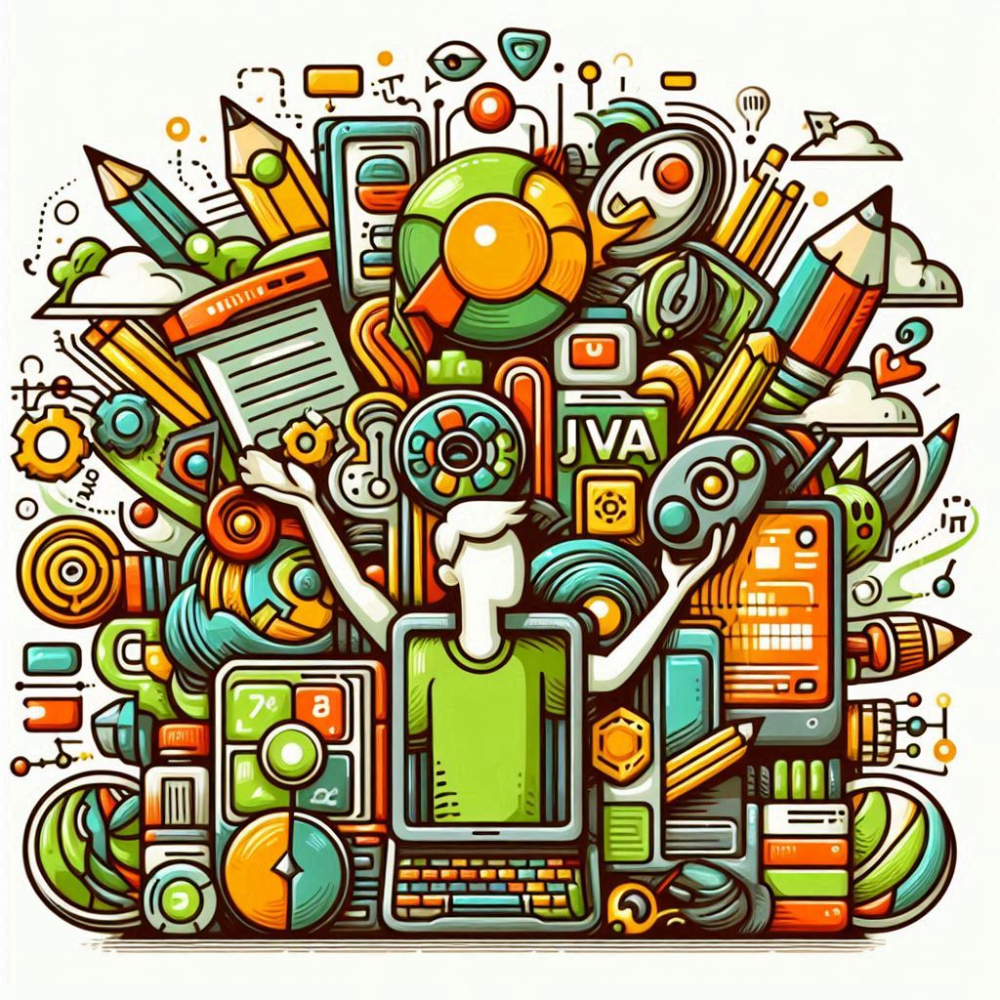

Este es un proyecto de la asignatura lenguaje de marcas con HTML y CSS, basado en la serie de BreakingBad donde se desarrolló una página princial, un formulario y una tabla.

Este es un proyecto de la asigantura de programación con java en IntelliJ basado en el funcionamiento de una calculadora. En mi caso programé el menú y la clase Resta con sus respectivos métodos.
Este es un proyecto de la asignatura de entornos de desarrollo donde se utiliza UML para el desarrollo del sistema de gestión de torneos de "Esports" donde se presentan los diferentes diagramas de casos de uso y de clases UML con la explicación de la estructura y sus relaciones.